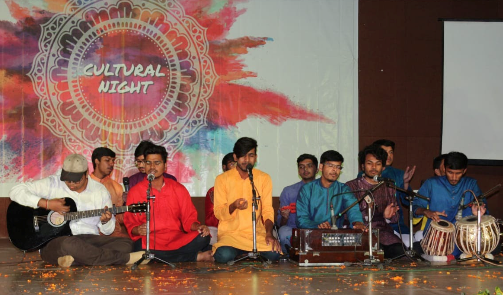
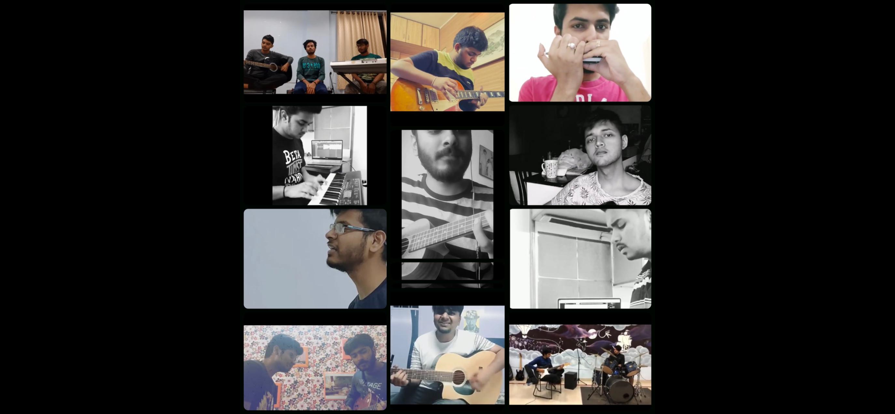
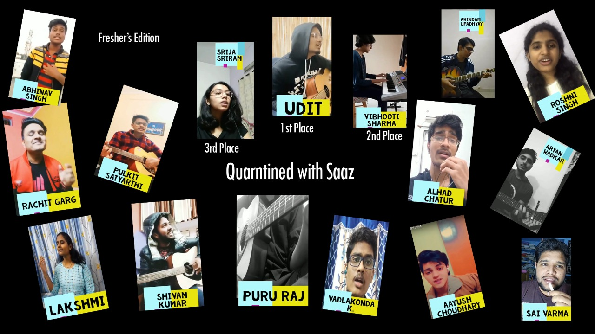
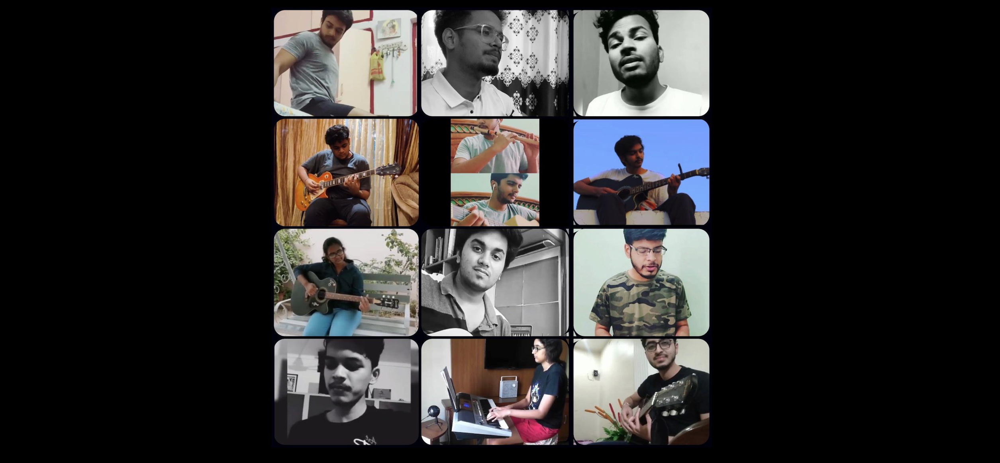
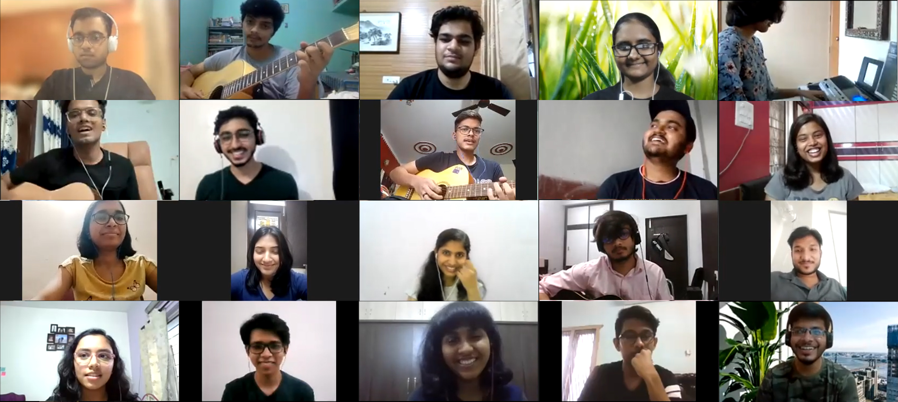
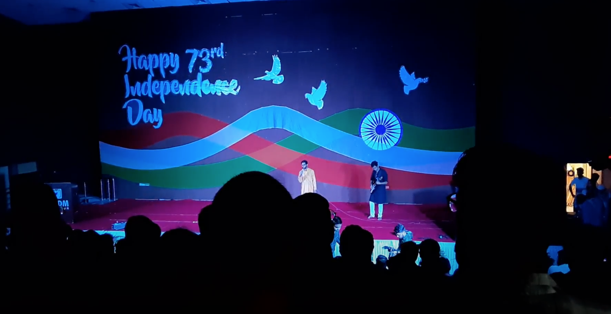
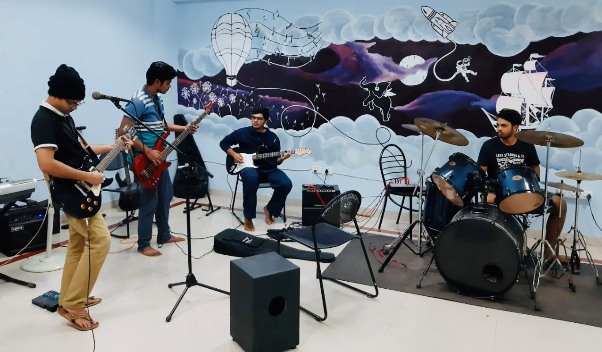

SAAZ
The Music Club of IIITDMJ
About SAAZ
SAAZ ON INTERNET
YOUTUBE

SAAZ EVENTS
DEW Cultural Night Design Workshop
Saaz along with other clubs helps organise a Cultural Night, an event themed at celebrating the vast diversity of India. With performances in various languages, from various cultures and sung by students from diverse regions, cultural night celebrates our differences while uniting us as Indians.
Quarantined with Saaz Season 1
Quarantined with Saaz was a month-long event that aimed to mitigate some of the boredom brought out by sitting at home all day because of the pandemic. We opened Saaz for submissions and asked everyone to send us videos of them showing their love for music and showcased all of them on our Instagram pages.
Orientation 2020
Saaz didn’t cut any corners when it came to welcoming the new 2020 batch ! Even though they were going to be at their homes (quarantined due to the pandemic) .. we made this an orientation video for them to experience the SAAZ (music club of IIITDMJ) firsthand.
Quarantined with Saaz freshers edition
It was the very first freshers event, for the new 2020 batch. Giving them an opportunity to showcase their musical talents to their new batchmates.
Quarantined with Saaz Season 2
After a big hit of the season 1 of Quarantined with Saaz, one year later, we decided to do a 2nd season.The month-long event that aimed to mitigate some of the boredom brought out by sitting at home all day because of the pandemic. We opened Saaz for submissions and asked everyone to send us videos of them showing their love for music and showcased all of them on our Instagram pages
Antakshari
With the first event of the new session, Saaz decided to have fun with an Online ANTAAKSHARI ! This was a team event aimed at the batchmates getting to know each other, through working in a group environment. The event was a big hit, and everyone sang and played instruments with full enthusiasm !
Special Performances
On the eve of Independence Day, the members of Second and Third years of the club took over and staged a group patriotic song with who joined along with various instruments in the crew, in the presence of esteemed faculty.
Music Room Jamming
Celebrating our love from music comes not just from performing, but also through jamming away at random hours of the day. Singing tunes from a variety of genres, jamming together is where the core and the essence of Saaz lies.